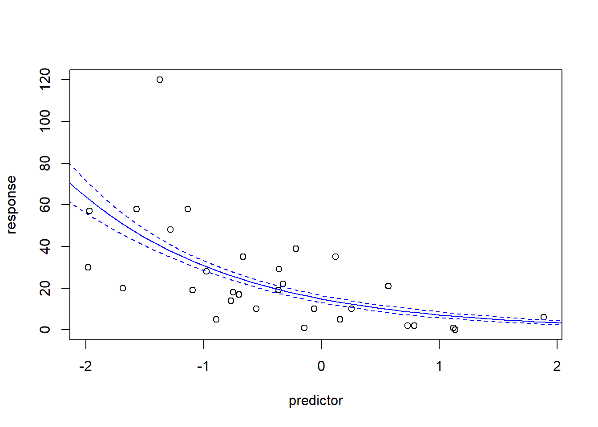
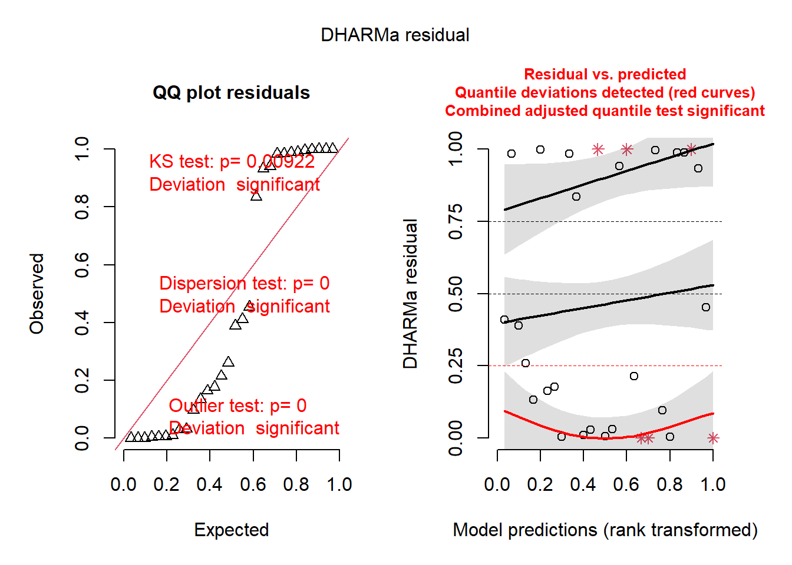
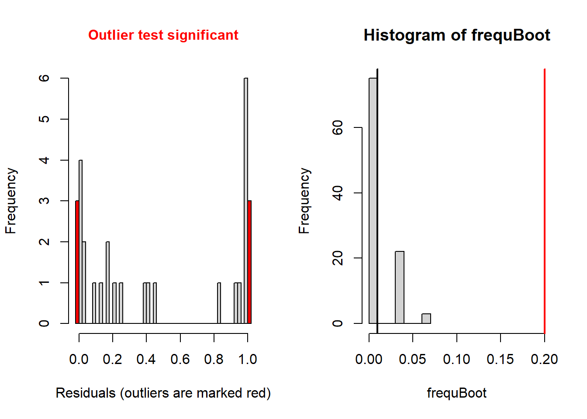
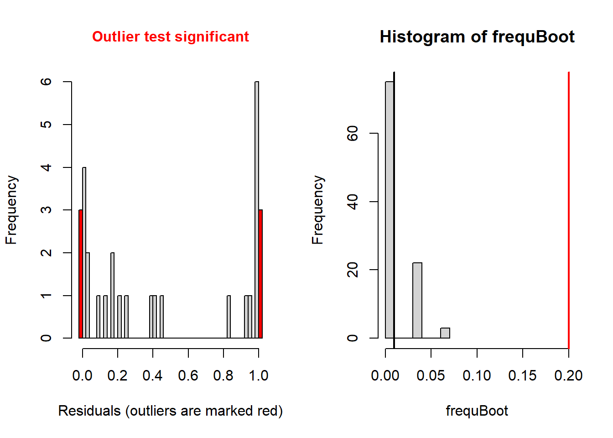
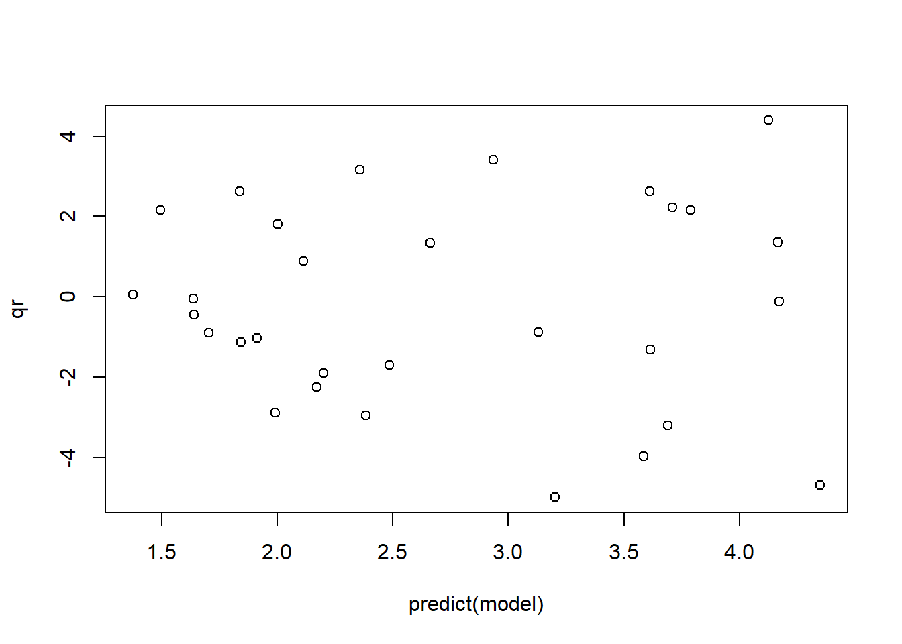
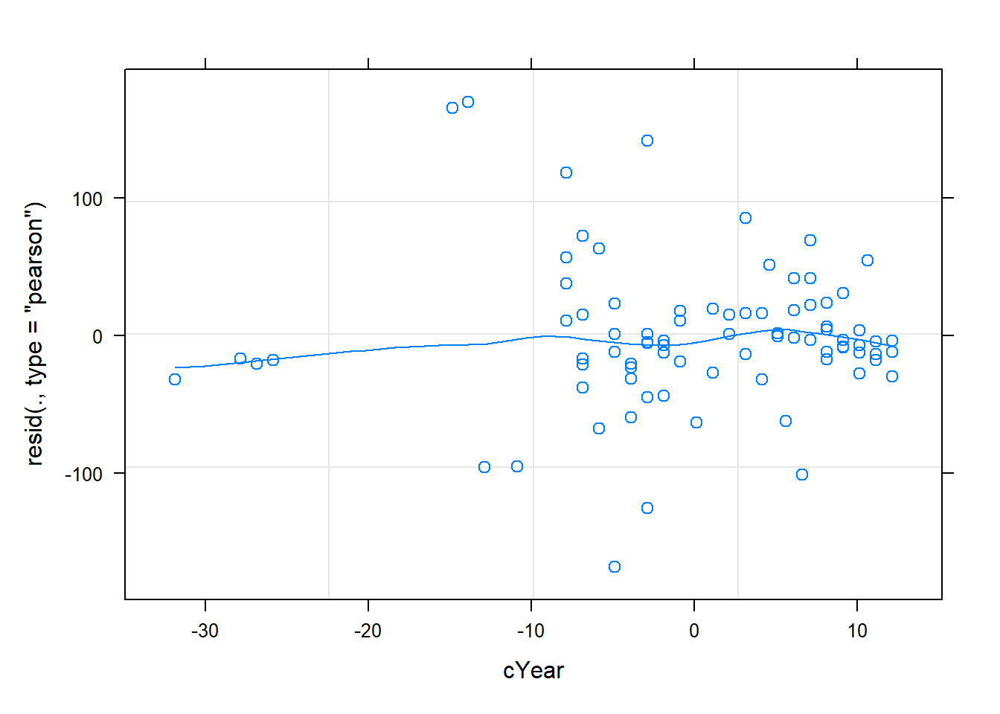
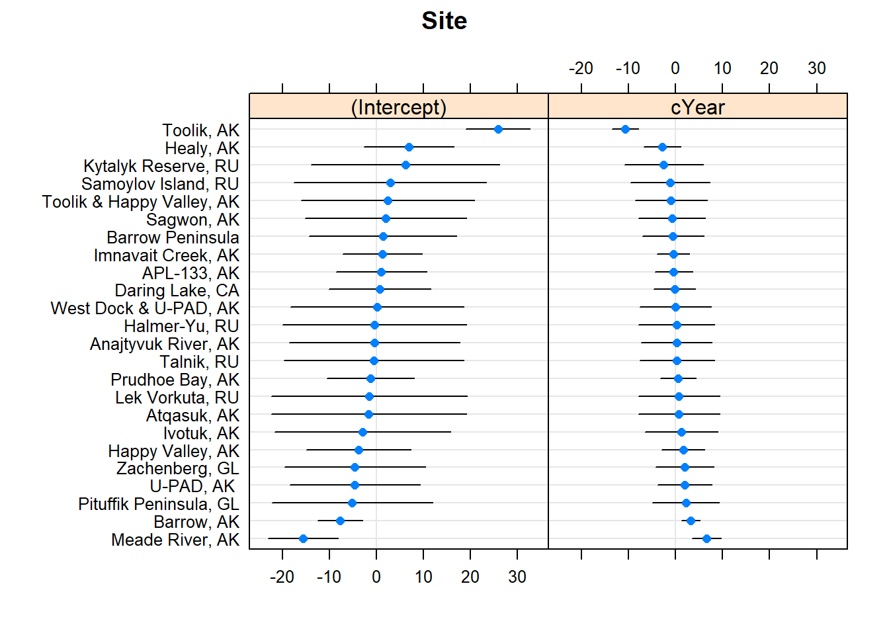

GLM and GLMM
NRES 710
Fall 2022
Download the R code for this lecture!
To follow along with the R-based lessons and demos, right (or command) click on this link and save the script to your working directory
Overview: Generalized Linear Models
Generalized Linear Models (GLM) are not generally covered in ‘intro’ stats classes, but they are so flexible and so common in ecology and environmental science that you really need to know how to work with these models!
The real data sets that we deal with as ecologists and environmental scientists tend to violate some key assumptions of classical linear regression or ANOVA. In particular, residuals are often non-normal and variance is not equal (heteroskedastic) across the range of predictions.
GLMs allow us to model response variables that are not amenable to
classical linear regression – but uses a model structure that closely
resembles linear regression. Pretty much everything about running a GLM
feels like linear regression. The primary function for running GLM
models (glm()) even looks very similar to the regression
function lm().
GLMs are parametric analyses – it’s just that (1) we don’t need to assume our response variable is normally distributed and (2) we don’t need to assume the relationship between the response variable and the predictor variable(s) is linear on the scale of the untransformed response variable. Let’s look into each of these in more detail:
Alternative error distributions
So we don’t need to assume the response variable is normally distributed – but we do need to assume it is distributed according to some known probability distribution – and we need to specify what distribution we ARE assuming. We can assume that the response process is Poisson distributed, or gamma distributed, or any of a host of other distributions (GLMs are typically limited to the set of distributions known as the “exponential family”). But we, the modelers, have to specify which distribution to use!
Link functions
So we don’t need to assume the relationship between the mean of the response variable and the predictor variable(s) is linear on the scale of the untransformed response variable – but we DO assume that the hypothesized relationship is linear on some transformation of the response variable – and we need to specify what transformed version of the response process we wish to assume linearity for. This is called the ‘link function’.
In the general case, a GLM can be described by the following pseudo-equation:
\(f(\mu)=\beta_0+\beta_1\cdot x_1+\beta_2 \cdot x_2 \ldots\)
The left side of this equation is the mean of the response variable, transformed according to the specified link function. The right side of this equation is called the linear predictor and describes how the (transformed) mean response varies as a function of the predictor variable(s).
To complete the picture, we represent the error distribution (inherent variability among observations) according to whatever error process we specified: e.g., a binomial distribution, Poisson distribution, or a number of other possibilities.
Logistic regression
For example, we might have a binary response variable and a continuous predictor variable. Making the assumption of linearity would not necessarily make sense in this case.
Let’s first make up an example:
# logistic regression ----------------------
## made up data for glm #1 (logistic regression)
predictor <- runif(100,0,50)
response <- rbinom(100,1, plogis(-5 + 0.26*predictor) )
plot(response~predictor,ylim=c(-2,2))
abline(lm(response~predictor),col="red") # overlay regression line
layout(matrix(1:4,nrow=2,byrow=2))
plot(lm(response~predictor))
Note that the predicted mean response at high values of the predictor exceed 1- which is impossible for a binary response. In fact, the mean (expected) value for a binary response is the same thing as the “probability of success (frequency of obtaining a value of 1)” – and probabilities are constrained between 0 and 1. Clearly we can’t make the assumption of linearity on the un-transformed binary response. Furthermore, the other diagnostic plots also do not look so hot…
One transformation that makes sense for a regression with a binary response variable is the logit transformation. The logit transformation is commonly used to take probabilities (which are constrained between 0 and 1) and transform them to unconstrained values that can vary between -Inf and Inf.
This way, the linear predictor (which is inherently unconstrained and can therefore theoretically vary between -Inf and Inf) can always be interpretable as a probability!
For example, take the following probabilities:
probs <- runif(10)
probs## [1] 0.10691064 0.55847640 0.44510033 0.08945630 0.42134245 0.21089711
## [7] 0.69728466 0.29543409 0.55251127 0.04963902Here’s what happens if we apply the logit transformation:
\(logit(p) = log(\frac{p}{(1-p)})\)
data.frame(
p = probs,
logit.p=log(probs/(1-probs))
)## p logit.p
## 1 0.10691064 -2.1226933
## 2 0.55847640 0.2349809
## 3 0.44510033 -0.2204876
## 4 0.08945630 -2.3202917
## 5 0.42134245 -0.3172649
## 6 0.21089711 -1.3195264
## 7 0.69728466 0.8344008
## 8 0.29543409 -0.8691361
## 9 0.55251127 0.2108225
## 10 0.04963902 -2.9520648If our response variable is binary and we want to assume that the mean response (on some transformed scale) is linearly dependent on our predictor variable, the logit transformation is a good candidate for our link function, because this way the mean response will never go below zero or above one.
So instead of:
\(\bar{y} = \beta_0 + \beta_1\cdot x\)
We can use the logit link function and assume instead that:
\(logit(\bar{y}) = \beta_0 + \beta_1\cdot x\)
If we solve for y, this equation becomes:
\(\bar{y} = \frac{e^{\beta_0 + \beta_1\cdot x}}{1+e^{\beta_0 + \beta_1\cdot x}}\)
This is what we do when we conduct a logistic regression! Specifically, in a logistic regression we generally assume the following:
Response distribution: response variable is binomially distributed. Often (but not necessarily), this takes the form of a specific binomial distribution with size=1 (can only be zero or one; also known as a Bernoulli distribution).
Link function: the mean response (binomial probability) is a linear function of the predictor variable(s) on the logit scale.
We use a binomial response distribution because our response variable is analogous to a coin flip. If you flip one coin you can get only a zero or a one, just like the response variable. The binomial distribution matches the response variable, so it is an appropriate distribution to assume!
## conduct logistic regression:
model <- glm(response~predictor,family=binomial(link="logit")) # logistic regression in R
summary(model) # summary looks similar to ordinary linear regression!##
## Call:
## glm(formula = response ~ predictor, family = binomial(link = "logit"))
##
## Deviance Residuals:
## Min 1Q Median 3Q Max
## -2.4670 -0.1771 0.0593 0.2770 1.9181
##
## Coefficients:
## Estimate Std. Error z value Pr(>|z|)
## (Intercept) -5.93999 1.42090 -4.180 2.91e-05 ***
## predictor 0.26975 0.05919 4.557 5.19e-06 ***
## ---
## Signif. codes: 0 '***' 0.001 '**' 0.01 '*' 0.05 '.' 0.1 ' ' 1
##
## (Dispersion parameter for binomial family taken to be 1)
##
## Null deviance: 132.813 on 99 degrees of freedom
## Residual deviance: 43.443 on 98 degrees of freedom
## AIC: 47.443
##
## Number of Fisher Scoring iterations: 7newdat <- data.frame( # make predictions for plotting regression line and approx conf bounds
predictor = seq(0,50,1)
)
mypred <- predict(model,type="response",se.fit=T,newdata = newdat)
plot(response~predictor)
lines(newdat$predictor,mypred$fit,col="blue")
lines(newdat$predictor,mypred$fit+2*mypred$se.fit,col="blue",lty=2)
lines(newdat$predictor,mypred$fit-2*mypred$se.fit,col="blue",lty=2)
Note that the relationship between the response and predictor looks non-linear. But this is not the same thing as non-linear regression. GLM is a type of linear model for a reason. It’s just that the relationship is assumed to be linear on the logit scale. Here is another visualization of the same exact model:
par(mfcol=c(1,2))
mypred <- predict(model,type="link",se.fit=T,newdata = newdat)
plot(newdat$predictor,mypred$fit,col="blue",type="l",ylab="mean response (logit scale)",xlab="predictor")
lines(newdat$predictor,mypred$fit+2*mypred$se.fit,col="blue",lty=2)
lines(newdat$predictor,mypred$fit-2*mypred$se.fit,col="blue",lty=2)
mypred <- predict(model,type="response",se.fit=T,newdata = newdat)
plot(newdat$predictor,mypred$fit,col="blue",type="l",ylab="mean response",xlab="predictor")
lines(newdat$predictor,mypred$fit+2*mypred$se.fit,col="blue",lty=2)
lines(newdat$predictor,mypred$fit-2*mypred$se.fit,col="blue",lty=2)
The standard regression diagnostic plots don’t work for logistic regression. However, we can use deviance residuals, Pearson residuals or quantile residuals to assess whether the key assumptions of GLM may be violated. I generally prefer to use the quantile residuals, because they (unlike deviance residuals) make sense for nearly any class of model including logistic regression and even GLMM:
# quantile residuals (GLM diagnostics)
qr <- statmod::qresiduals(model)
qqnorm(qr)
abline(0,1)
plot(qr~predict(model))
Another simple example (Poisson count regression)
Sometimes our measured response is a count of something (e.g., number of stems in a plot). In such cases, our response variable cannot go below zero- and the response variable should ideally come from a discrete distribution that only allows integers. The simplest way to model this is:
Response distribution: Poisson
Link function: Natural logarithm
The Poisson distribution (with only one parameter) is the simplest discrete probability distribution, and the (natural) log is the simplest link function that maps a quantity with a lower bound of zero to a quantity with a lower bound of -Inf. After all, a count cannot go below zero, whereas a linear function of predictor variables can!
Let’s make up some count data:
# Count regression example
predictor = runif(30,-2,2)
response = rnbinom(30,mu=exp(3-0.5*predictor),size=2) # make up data!
plot(response~predictor)
abline(lm(response~predictor))
par(mfrow=c(2,2))
plot(lm(response~predictor))
Here we see some potential issues with ordinary linear regression and we might consider Poisson count regression instead!
## try Poisson count regression model!
model <- glm(response~predictor,family=poisson(link="log"))
summary(model)##
## Call:
## glm(formula = response ~ predictor, family = poisson(link = "log"))
##
## Deviance Residuals:
## Min 1Q Median 3Q Max
## -5.1637 -1.9085 -0.3191 2.0617 4.3448
##
## Coefficients:
## Estimate Std. Error z value Pr(>|z|)
## (Intercept) 2.86667 0.04955 57.86 <2e-16 ***
## predictor -0.75982 0.03677 -20.66 <2e-16 ***
## ---
## Signif. codes: 0 '***' 0.001 '**' 0.01 '*' 0.05 '.' 0.1 ' ' 1
##
## (Dispersion parameter for poisson family taken to be 1)
##
## Null deviance: 716.22 on 29 degrees of freedom
## Residual deviance: 186.76 on 28 degrees of freedom
## AIC: 322.16
##
## Number of Fisher Scoring iterations: 5plot(response~predictor)
newdat <- data.frame(
predictor = seq(-3,3,0.1)
)
mypred <- predict(model,type="response",se.fit = T,newdata=newdat)
lines(newdat$predictor,mypred$fit,col="blue")
lines(newdat$predictor,mypred$fit+2*mypred$se.fit,col="blue",lty=2)
lines(newdat$predictor,mypred$fit-2*mypred$se.fit,col="blue",lty=2)
Diagnostic testing with GLM
Obviously, the standard diagnostic plots don’t make much sense for GLM– after all, they are testing assumptions that we are no longer making! We don’t need to test for normality of residuals if we are assuming our response variable is binomially distributed! We don’t need to test for homogeneity of variance if our assumed probability distribution is heteroskedastic!
The Poisson distribution, for example, does not have homogeneous variance- in fact, the variance of the Poisson distribution is equal to the mean. So the larger the expected value, the larger the variance!
However, we need some way of testing whether the distribution we selected is a reasonable fit to our data. We could use so-called deviance residuals here (which is the default in r) but I prefer to use the quantile residual approach.
The DHARMa package in R not only implements the quantile residual approach, but does so in a way that is applicable to nearly all models you can fit in R!
NOTE: the DHARMa package also works for GLMM models (generalized linear mixed-effects models- see below!)
residuals(model) # compute the deviance residuals for the poisson regression model## 1 2 3 4 5 6
## 1.41091663 0.02027447 -1.91687117 -1.88329487 -2.94412743 4.34481884
## 7 8 9 10 11 12
## -2.25788730 -1.15574121 -4.68016554 1.39524279 -0.06377005 0.89809385
## 13 14 15 16 17 18
## 2.62100502 -0.99064866 2.64203006 2.23928663 -1.16695579 -5.16374164
## 19 20 21 22 23 24
## 3.06452320 -0.83251497 -1.39097097 -2.82515688 2.24746686 2.13160046
## 25 26 27 28 29 30
## 1.85218827 -0.10777226 -0.53042214 -3.30217257 3.32555707 -3.96901409summary(residuals(model)) # median should be near zero## Min. 1st Qu. Median Mean 3rd Qu. Max.
## -5.1637 -1.9085 -0.3191 -0.2329 2.0617 4.3448paste0(c("Null deviance: ", "Residual deviance: "), # null deviance should be much higher than residual deviance
round(c(model$null.deviance, deviance(model)), 2))## [1] "Null deviance: 716.22" "Residual deviance: 186.76"paste0(c("model df: ", "Residual deviance: "), # resid deviance should be close to residual df
round(c(model$df.residual, deviance(model)), 2))## [1] "model df: 28" "Residual deviance: 186.76"So using the deviance residuals we’re starting to get a picture that the Poisson distribution may not be a great fit. Let’s use the DHARMa package now…
library(DHARMa)
simresids <- simulateResiduals(model,n=250,plot=T) # clearly this is a bad fit!
plotResiduals(simresids,predictor) # look for patterns across a predictor variable
testResiduals(simresids) # run tests on the residuals! 

## $uniformity
##
## Asymptotic one-sample Kolmogorov-Smirnov test
##
## data: simulationOutput$scaledResiduals
## D = 0.29942, p-value = 0.009224
## alternative hypothesis: two-sided
##
##
## $dispersion
##
## DHARMa nonparametric dispersion test via sd of residuals fitted vs.
## simulated
##
## data: simulationOutput
## dispersion = 8.6128, p-value < 2.2e-16
## alternative hypothesis: two.sided
##
##
## $outliers
##
## DHARMa bootstrapped outlier test
##
## data: simulationOutput
## outliers at both margin(s) = 6, observations = 30, p-value < 2.2e-16
## alternative hypothesis: two.sided
## percent confidence interval:
## 0.00000000 0.05083333
## sample estimates:
## outlier frequency (expected: 0.00933333333333333 )
## 0.2## $uniformity
##
## Asymptotic one-sample Kolmogorov-Smirnov test
##
## data: simulationOutput$scaledResiduals
## D = 0.29942, p-value = 0.009224
## alternative hypothesis: two-sided
##
##
## $dispersion
##
## DHARMa nonparametric dispersion test via sd of residuals fitted vs.
## simulated
##
## data: simulationOutput
## dispersion = 8.6128, p-value < 2.2e-16
## alternative hypothesis: two.sided
##
##
## $outliers
##
## DHARMa bootstrapped outlier test
##
## data: simulationOutput
## outliers at both margin(s) = 6, observations = 30, p-value < 2.2e-16
## alternative hypothesis: two.sided
## percent confidence interval:
## 0.00000000 0.05083333
## sample estimates:
## outlier frequency (expected: 0.00933333333333333 )
## 0.2Okay so the DHARMa package diagnostics seem to indicate that the Poisson regression was a poor fit to the data (you will find this is usually true with Poisson regression). Let’s try running a negative binomial regression instead!
## try NegBinom count regression model!
library(MASS)
## NOTE: in reality you should use glm.nb because you don't know the additional parameter theta!
model <- glm(response~predictor,family=negative.binomial(link="log",theta = 2))
summary(model)##
## Call:
## glm(formula = response ~ predictor, family = negative.binomial(link = "log",
## theta = 2))
##
## Deviance Residuals:
## Min 1Q Median 3Q Max
## -1.8241 -0.7926 -0.1538 0.4755 1.1283
##
## Coefficients:
## Estimate Std. Error t value Pr(>|t|)
## (Intercept) 2.87003 0.11157 25.73 < 2e-16 ***
## predictor -0.74449 0.09135 -8.15 7.15e-09 ***
## ---
## Signif. codes: 0 '***' 0.001 '**' 0.01 '*' 0.05 '.' 0.1 ' ' 1
##
## (Dispersion parameter for Negative Binomial(2) family taken to be 0.6373751)
##
## Null deviance: 65.919 on 29 degrees of freedom
## Residual deviance: 21.200 on 28 degrees of freedom
## AIC: 220.46
##
## Number of Fisher Scoring iterations: 4model <- glm.nb(response~predictor)
plot(response~predictor)
newdat <- data.frame(
predictor = seq(-3,3,0.1)
)
mypred <- predict(model,type="response",se.fit = T,newdata=newdat)
lines(newdat$predictor,mypred$fit,col="blue")
lines(newdat$predictor,mypred$fit+2*mypred$se.fit,col="blue",lty=2)
lines(newdat$predictor,mypred$fit-2*mypred$se.fit,col="blue",lty=2)
Now let’s check the model fit!
simresids <- simulateResiduals(model,n=250,plot=T) # looks a lot better!
testResiduals(simresids) # run tests on the residuals!
## $uniformity
##
## Exact one-sample Kolmogorov-Smirnov test
##
## data: simulationOutput$scaledResiduals
## D = 0.09726, p-value = 0.913
## alternative hypothesis: two-sided
##
##
## $dispersion
##
## DHARMa nonparametric dispersion test via sd of residuals fitted vs.
## simulated
##
## data: simulationOutput
## dispersion = 0.6299, p-value = 0.552
## alternative hypothesis: two.sided
##
##
## $outliers
##
## DHARMa bootstrapped outlier test
##
## data: simulationOutput
## outliers at both margin(s) = 0, observations = 30, p-value = 1
## alternative hypothesis: two.sided
## percent confidence interval:
## 0.00000000 0.03333333
## sample estimates:
## outlier frequency (expected: 0.007 )
## 0## $uniformity
##
## Exact one-sample Kolmogorov-Smirnov test
##
## data: simulationOutput$scaledResiduals
## D = 0.09726, p-value = 0.913
## alternative hypothesis: two-sided
##
##
## $dispersion
##
## DHARMa nonparametric dispersion test via sd of residuals fitted vs.
## simulated
##
## data: simulationOutput
## dispersion = 0.6299, p-value = 0.552
## alternative hypothesis: two.sided
##
##
## $outliers
##
## DHARMa bootstrapped outlier test
##
## data: simulationOutput
## outliers at both margin(s) = 0, observations = 30, p-value = 1
## alternative hypothesis: two.sided
## percent confidence interval:
## 0.00000000 0.03333333
## sample estimates:
## outlier frequency (expected: 0.007 )
## 0And this time our count regression model fits the data well, and we can report the results of this model with confidence!
NOTE: you should always run goodness-of-fit tests for any model you fit to data. But it is especially important in the case of Poisson regression, because in general most count data has much more variance that a Poisson distribution allows. This can lead to inflated type 1 error and can be a huge problem. You should always be wary of reported Poisson regression results with no goodness of fit checks!
Model selection with AIC
Often we have multiple candidate models for describing how our response variable relates to one or more of our predictor variables. This is true for multiple linear regression and GLM models, and mixed-effects models (see below) and non-linear regression models.
Information-theoretic criteria like Akaike’s Information Criterion provide a common currency that allows us to compare and rank multiple models.
In general, the models with the lowest AIC are better than models with higher AIC.
AIC is defined as:
\(AIC = -2\cdot ln(Likelihood) + 2\cdot k\)
Where k is the number of fitted parameters in the model and Likelihood is the maximum likelihood of the data (probability of the observed data set under the fitted model).
There is a commonly used correction for small sample size called AICc:
\(AICc = AIC + \frac{2k^2+2k}{n-k-1}\)
Comparing multiple GLM models using AIC is relatively simple!
######
# Make up data!
predictor1 = runif(30,-2,2)
predictor2 <- runif(30,-100,100)
predictor3 <- rnorm(30) # useless predictor
response = rnbinom(30,mu=exp(3-0.5*predictor1+0.01*predictor2),size=2)
###
# fit a bunch of candidate models
model.pois.all <- glm(response~predictor1+predictor2+predictor3,family="poisson")
model.nb.all <- glm.nb(response~predictor1+predictor2+predictor3)
model.nb.1 <- glm.nb(response~predictor1)
model.nb.12 <- glm.nb(response~predictor1+predictor2)
model.nb.2 <- glm.nb(response~predictor2)
cand.set <- list(
Poisson=model.pois.all,
NegBin_allvars = model.nb.all,
NegBin_pred1 = model.nb.2,
NegBin_preds1and2 = model.nb.12,
NegBin_pred2 = model.nb.2
)
### Make AIC table
AICtab <- data.frame(
ModelName = names(cand.set),
LogLikelihood = sapply(cand.set,logLik),
AIC = sapply(cand.set,AIC)
)
AICtab$DeltaAIC <- abs(AICtab$AIC-min(AICtab$AIC))
AICtab[order(AICtab$DeltaAIC,decreasing = F),]## ModelName LogLikelihood AIC DeltaAIC
## NegBin_preds1and2 NegBin_preds1and2 -121.2851 250.5703 0.000000
## NegBin_allvars NegBin_allvars -121.2836 252.5671 1.996863
## NegBin_pred1 NegBin_pred1 -131.0361 268.0723 17.501980
## NegBin_pred2 NegBin_pred2 -131.0361 268.0723 17.501980
## Poisson Poisson -258.1650 524.3300 273.759717NOTE: for AIC model comparison to make sense, the response variable must be exactly the same (note: you can’t compare different transformations of the response variable) and the number of observations must be exactly the same. Careful with missing data here!
Overview: Mixed-effects models
Remember the assumption of independent observations? Every single one of the models we have considered so far makes that assumption. If that assumption is violated, we are committing pseudoreplication. If pseudoreplication is relatively minor we may be able to ignore it for modeling (but still reporting the potential issue). But in many cases the issue is too large to ignore.
Mixed models allow us to build more realistic models that incorporate some known potential sources of non-independence in our data.
The term mixed-effects models refers to the fact that these models have two kinds of predictor variables: fixed effects and random effects. The random effects are what allow us to incorporate potential inter-dependencies among our observations.
Is it a fixed effect or a random effect?
One point of confusion that quickly bubbles up around mixed-effects models is the question of whether you should include a predictor variable as a random or a fixed effect.
It might help to consider some typical random effects and some typical fixed effects:
Fixed effects
Typical fixed effects include:
- Temperature (continuous fixed effect- e.g., linear regression)
- Treatment (categorical fixed effect- e.g., ANOVA)
- Interaction between temperature and treatment (interaction fixed effect)
Fixed effects are what we have been calling ‘predictor variables’ in this class. They usually represent the variables that we want to relate to our response variable. Ideally, our observations span the full range of our fixed effects (predictor variables) such that we can use our data to make inference about the relationship between our response and predictor variables across the range of values that we might encounter in our entire population of interest.
There is no assumption that our predictor variables are normally distributed- in fact, the only assumption we make about the predictor variables (usually) are that (1) they are measured with certainty and (2) we ideally want them to be distributed evenly across the range of values across which we want to make inference about our response process.
For example, if we want to make inference about the relationship between tree diameter and volume, we would like to take measurements of trees that vary from the smallest-diameter trees we wish to make inference about to the largest-diameter trees that we’d like to make inference about. To ensure that our sample includes the full range of diameters, we might specifically select trees that cover the entire range of interest. That is, we could fix the set of trees in our samples to include the full range of our predictor variable. There is no rule stating that we have to select our predictor variable levels from a random process. In fact, experimental design is all about pre-determining our predictor variable levels!
The term fixed effect comes from experimental design, where we literally arrange (fix) our observations into specific treatment and control groups. For example, we might take 100 otherwise interchangeable sapling trees and subject them randomly to different treatments of fixed levels of some factor that might influence growth (say nitrogen concentrations)- and then we can make inference about the effect of nitrogen across the range of concentrations that we determined.
SIDE NOTE: we can (and often do) make inferences about our response variable for levels of our predictor variables that are outside the range of values in our data set. This is called extrapolation and can be a dangerous practice because we lack empirical support for this type of inference, especially when the predictions are far outside the bounds of our data set.
Random effects
Typical Random effects include:
- Block ID (blocks are a small subset of the units about which you want to make inference, multiple observations per block)
- Site ID (sites are a small subset of the units about which you want to make inference, multiple observations per site)
- Year (study years are a small subset of the years about which you want to make inference, multiple observations per year)
- Individual (individuals studied are randomly selected from the population of interest, each individual subjected to repeated measurements)
First of all, most random effects will be categorical.
Second, random effects are a random sample or otherwise a small subset of the units about which you want to make inference.
Third, random effects variables must have multiple (usually >3) observations per level. If you only have one observation per random effect level, it is not a random effect- it’s just a replicate observation in an ordinary linear regression!
Mixed effects models in regression notation
Before we run examples in R, let’s look at linear mixed-effects regression models in regression notation.
The equation should look familiar- the only difference is that there is more than one error term. Each random effect is now associated with a new error term…
Let’s say we are fitting the following mixed-effects model:
Response variable: Tortoise clutch size
Predictor variables: fixed effects: Annual winter
precipitation, Annual spring temperature
Predictor variables: random effects: Site, year
The simplest way to model random effects is to include them as random intercepts– that is, the intercept term changes randomly with each factor level.
In many cases, simply adding a random intercept term for each random effect is appropriate for accounting for sources of non-independence in your data set- but in many cases it is not sufficient. That is because the slope (the relationship between your response and predictor– the thing you are usually most interested in making inference about) can itself vary depending on your random effect levels. This is called a random slopes model.
Here is an equation to represent the simpler random-intercept analysis:
\(Clutch \space size = \beta_0 + \beta_1 \cdot precip_t + \beta_2 \cdot temp_t + \gamma_{site} + \gamma_{year} + \epsilon_{obs}\)
Here we now have three sources of ‘error’: a random (normally distributed) term for each site (\(\gamma_{site}\)), a random (normally distributed) term for each year, and a normally distributed residual error term (\(\epsilon_{obs}\)).
If we want to include random slope and random intercept terms (which is often the most appropriate model), the equation gets a bit more complicated:
\(Clutch \space size = \beta_0 + \beta_1 \cdot precip_t + \beta_2 \cdot temp_t + \gamma_{site} + \gamma_{year} + \gamma_{site, \beta_1}\cdot precip_t + \gamma_{site, \beta_2}\cdot temp_t + \epsilon_{obs}\)
Here we have two addition “error” terms that allow the slope terms (beta1 and beta2) to vary randomly with each site and year.
Nested random effects
You will often read descriptions of mixed-effects models saying things like “Individual and Site were included as random effects, with Individual nested within Site”.
Let’s imagine we randomly selected 10 sites and within each site we capture a random sample of tortoises and we measure tortoise clutch size for 4 consecutive years for each tortoise.
In this case, we have two potential random effects: site (random subset of a much larger set of potential sites) and individual (random subset of a much larger set of individuals within each site). Individual #1 from Site #1 is obviously a different individual than Individual #1 from Site #2. So we can’t simply include a simple random effect term for “Individual #1”. Since there are many “Individual #1”s, each “Individual #1” must get its own random effect! In this case, Individual is nested within Site!
Let’s contrast this with a non-nested random effect- let’s say site and year.
In this case, Year “2014” in site #1 is the same as Year “2014” in site #2. Therefore the random effect associated with year “2014” does not differ depending on site. In this case, site and year are independent, non-nested random effects!
Assumptions of mixed-effects regression
The assumptions of mixed-effects regression are the same as in classical linear regression (for mixed-effects regression models) or generalized linear models (for generalized linear mixed models; GLMM). The only additional assumption is this:
- All random effects are normally distributed!
In some more complex models you might encounter models that assume random effects take other distributions- but this is still rare to see!
Example: mixed-effects regression in R
The ‘workhorse’ package in R for fitting mixed-effects regression models (and GLMM) is the ‘lme4’ package. However, there are some other packages you should be aware of that can make your life easier. One such package is “glmmTMB”- I have found this package has more flexibility and tends to have less trouble fitting complex mixed-effects models.
We will use this dataset as our example - this is a data set on carbon balance in the tundra. This example is taken from this website.
#########
# TUNDRA EXAMPLE
#########
##### Read in the data
mc1 <- read.csv("tundra2.csv",sep=",",na.strings=c("-","NA"))
summary(mc1)## X Year Site GS.NEE
## Min. : 1.00 Min. :1966 Length:82 Min. :-153.000
## 1st Qu.:21.25 1st Qu.:1993 Class :character 1st Qu.: -55.350
## Median :41.50 Median :1998 Mode :character Median : -20.867
## Mean :41.50 Mean :1998 Mean : -10.012
## 3rd Qu.:61.75 3rd Qu.:2005 3rd Qu.: 3.275
## Max. :82.00 Max. :2010 Max. : 390.000
## n cYear
## Min. :1.000 Min. :-31.8698
## 1st Qu.:1.000 1st Qu.: -4.8698
## Median :1.000 Median : 0.6302
## Mean :1.829 Mean : -0.1015
## 3rd Qu.:2.750 3rd Qu.: 7.1302
## Max. :6.000 Max. : 12.1302table(mc1$Year) # some years have many observations##
## 1966 1970 1971 1972 1983 1984 1985 1987 1990 1991 1992
## 1 1 1 1 1 1 1 1 4 5 2
## 1993 1994 1995 1996 1997 1998 1999 2000 2001 2002 2002.5
## 4 4 6 4 3 1 2 2 3 2 1
## 2003 2003.5 2004 2004.5 2005 2006 2007 2008 2008.5 2009 2010
## 2 1 3 1 4 5 4 4 1 3 3table(mc1$Site) # some sites have many observations##
## Anajtyvuk River, AK APL-133, AK Atqasuk, AK
## 1 3 1
## Barrow Peninsula Barrow, AK Daring Lake, CA
## 1 12 7
## Halmer-Yu, RU Happy Valley, AK Healy, AK
## 1 5 7
## Imnavait Creek, AK Ivotuk, AK Kytalyk Reserve, RU
## 4 2 1
## Lek Vorkuta, RU Meade River, AK Pituffik Peninsula, GL
## 2 1 2
## Prudhoe Bay, AK Sagwon, AK Samoylov Island, RU
## 7 1 1
## Talnik, RU Toolik & Happy Valley, AK Toolik, AK
## 1 1 12
## U-PAD, AK West Dock & U-PAD, AK Zachenberg, GL
## 2 1 6library(ggplot2)
## visualize net ecosystem exchange by year- varying by site
ggplot(mc1,aes(x=Year,y=GS.NEE,colour=Site))+geom_point()+
geom_smooth(method="lm",alpha=0.3)+
scale_y_continuous(limits=c(-150,400),oob=scales::squish)## `geom_smooth()` using formula 'y ~ x'## Warning in qt((1 - level)/2, df): NaNs produced
## Warning in qt((1 - level)/2, df): NaNs produced
## Warning in qt((1 - level)/2, df): NaNs produced
## Warning in qt((1 - level)/2, df): NaNs produced## Warning in max(ids, na.rm = TRUE): no non-missing arguments to max; returning
## -Inf
## Warning in max(ids, na.rm = TRUE): no non-missing arguments to max; returning
## -Inf
## Warning in max(ids, na.rm = TRUE): no non-missing arguments to max; returning
## -Inf
## Warning in max(ids, na.rm = TRUE): no non-missing arguments to max; returning
## -Inf
Okay now let’s fit a mixed-effects regression model with Net Ecosystem Exchange (NEE) as the response variable and Year as the fixed-effect (covariate). For our random effect we will have site- and the intercept and trend (slope term) can vary with site. That is, we have random intercept terms and random slope terms for each site.
Fitting a mixed model in ‘lme4’ (using the ‘lmer’ function) looks a lot like fitting a linear model in ‘lm’.
library(lme4)
cmod_lmer <- lmer(GS.NEE ~ cYear + (1+cYear|Site),
data=mc1, weights=n)## boundary (singular) fit: see help('isSingular')A couple notes: first of all, the ‘weights’ term is there because some observations are aggregated- that is, there are multiple observations for a given site/year combination- those observations that aggregate 3 observations get triple the weight of a site/year combination with only one observation. (Technically, we are using an inverse-variance weighting scheme!)
Secondly, note that year is treated as a fixed effect in this model. That is- we are looking for a trend in our response variable over time!
Third, note the warning of a ‘singular fit’. This is fairly common to see, and doesn’t necessarily mean you can’t use the model. But it means that lme4 struggled to fit the model and some of the parameters may have very wide confidence bounds!
Let’s look at the model results using ‘summary’:
summary(cmod_lmer)## Linear mixed model fit by REML ['lmerMod']
## Formula: GS.NEE ~ cYear + (1 + cYear | Site)
## Data: mc1
## Weights: n
##
## REML criterion at convergence: 874.2
##
## Scaled residuals:
## Min 1Q Median 3Q Max
## -2.90221 -0.35038 -0.07972 0.30155 2.93141
##
## Random effects:
## Groups Name Variance Std.Dev. Corr
## Site (Intercept) 116.05 10.773
## cYear 19.95 4.467 -1.00
## Residual 3355.16 57.924
## Number of obs: 82, groups: Site, 24
##
## Fixed effects:
## Estimate Std. Error t value
## (Intercept) -16.296 7.338 -2.221
## cYear -3.745 1.341 -2.792
##
## Correlation of Fixed Effects:
## (Intr)
## cYear -0.417
## optimizer (nloptwrap) convergence code: 0 (OK)
## boundary (singular) fit: see help('isSingular')The results from the ‘summary’ function should look somewhat familiar! But note that there are no p-values associated with your fixed effects (regression coefficients)- just t-statistics! This is because it is really hard to know what the degrees of freedom are for the test! Is it the number of observations? Is it the number of sites?
Also note that the summary now includes a summary of the random effects. One red flag here is that the random intercept term and random slope terms are perfectly (negagively) correlated (Corr=-1). This is the reason for the ‘singular’ warning in this case.
From the random effects summary we can see that site explains a relatively small percent of the total variance among observations.
To fit the model using glmmTMB we can use the following code:
library(glmmTMB)
cmod_glmmTMB <- glmmTMB(GS.NEE ~ cYear + (1+cYear|Site),
data=mc1,
weights=n)## Warning in fitTMB(TMBStruc): Model convergence problem; non-positive-definite
## Hessian matrix. See vignette('troubleshooting')summary(cmod_glmmTMB)## Family: gaussian ( identity )
## Formula: GS.NEE ~ cYear + (1 + cYear | Site)
## Data: mc1
## Weights: n
##
## AIC BIC logLik deviance df.resid
## NA NA NA NA 76
##
## Random effects:
##
## Conditional model:
## Groups Name Variance Std.Dev. Corr
## Site (Intercept) 3.841e-02 0.196
## cYear 3.148e+01 5.611 -0.79
## Residual 1.543e+03 39.280
## Number of obs: 82, groups: Site, 24
##
## Dispersion estimate for gaussian family (sigma^2): 1.54e+03
##
## Conditional model:
## Estimate Std. Error z value Pr(>|z|)
## (Intercept) -22.347 5.579 -4.005 6.19e-05 ***
## cYear -3.706 1.416 -2.617 0.00887 **
## ---
## Signif. codes: 0 '***' 0.001 '**' 0.01 '*' 0.05 '.' 0.1 ' ' 1The summary looks similar- but one difference you see is that there are p-values on the regression coefficients now.
Let’s perform some model diagnostics to test goodness-of-fit!
Since the standard linear regression assumptions apply, we could look at our standard diagnostic plots:
plot(cmod_lmer,type=c("p","smooth"))
plot(cmod_lmer,sqrt(abs(resid(.)))~fitted(.),
type=c("p","smooth"),ylab=expression(sqrt(abs(resid))))
plot(cmod_lmer,resid(.,type="pearson")~cYear,
type=c("p","smooth"))
qqnorm(residuals(cmod_lmer,type="pearson",scaled=T))
The diagnostics look, well, okay!. If you look into it more deeply, you see that that ‘Toolik’ site is the one causing most of the issues.
Okay let’s visualize the random effects (both intercept and random slope terms):
library(lattice)
dotplot(ranef(cmod_lmer,condVar=TRUE),
lattice.options=list(layout=c(1,2)))## $Site
If we want to test to see if year is explaining any of the variance, we can run an F-test (ANOVA):
library(car)
Anova(cmod_lmer)## Analysis of Deviance Table (Type II Wald chisquare tests)
##
## Response: GS.NEE
## Chisq Df Pr(>Chisq)
## cYear 7.7956 1 0.005237 **
## ---
## Signif. codes: 0 '***' 0.001 '**' 0.01 '*' 0.05 '.' 0.1 ' ' 1Note that if we had a categorical variable and wanted to run pairwise comparisons, we could- using the ‘emmeans’ package (just like with standard ANOVA).
If we want confidence intervals on our fixed effects, we can use the ‘confint’ function, just like in ordinary linear regression. Here we use the Wald method (simplified version) and only extract confidence intervals for the fixed effects.
I had to use ‘suppressWarnings’ to avoid lots of warning messages here!
confint(cmod_lmer,parm="beta_",method="Wald")## 2.5 % 97.5 %
## (Intercept) -30.677776 -1.914152
## cYear -6.374309 -1.116174